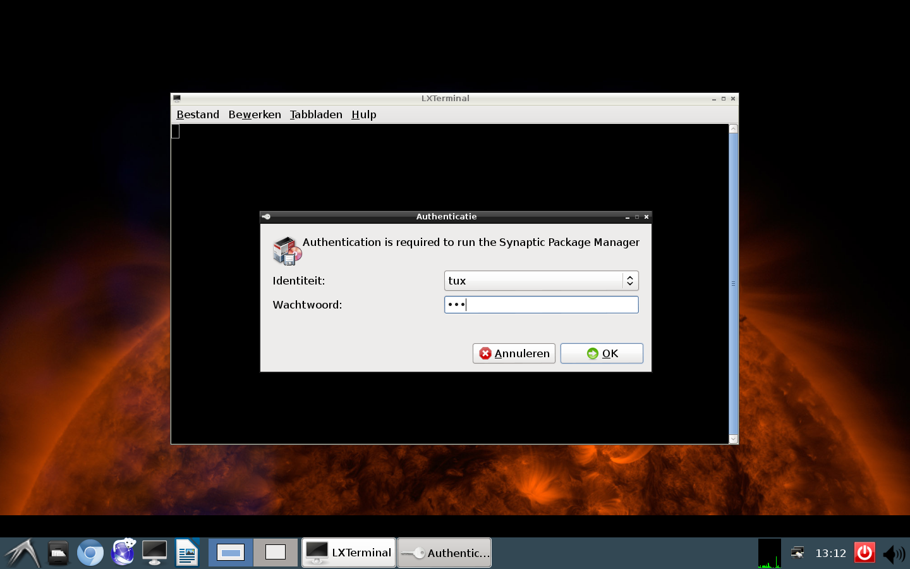
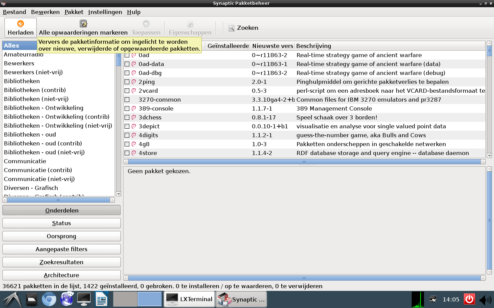
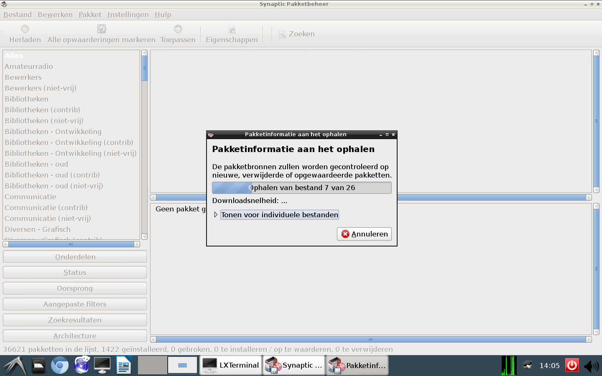
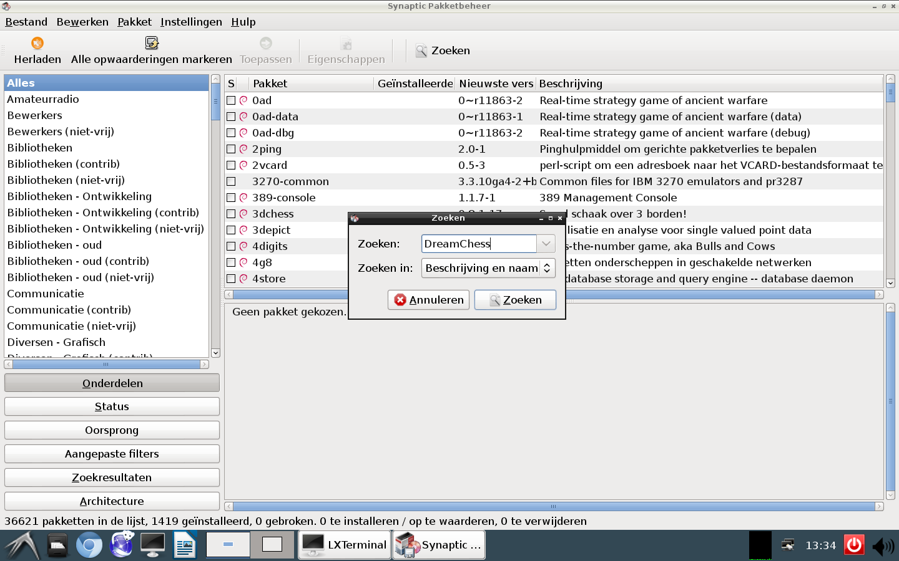
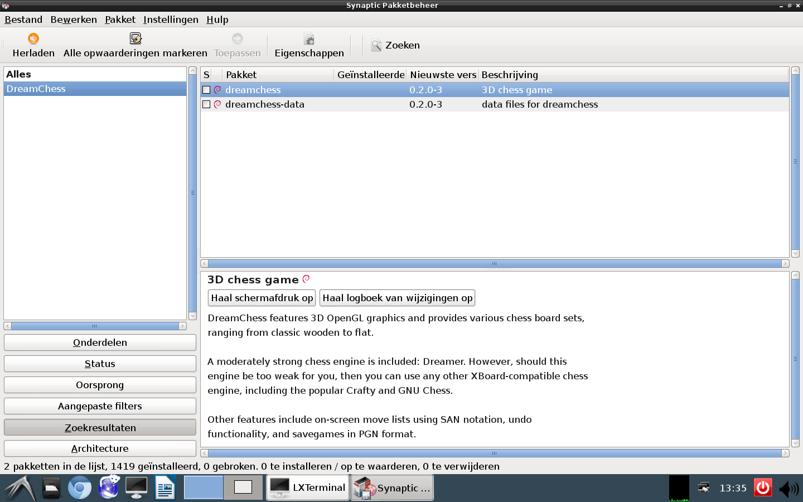
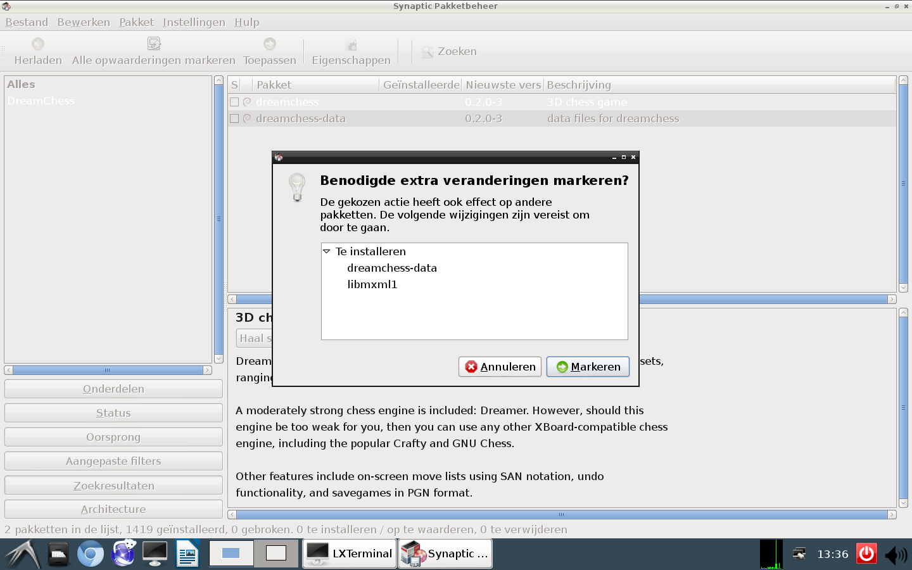
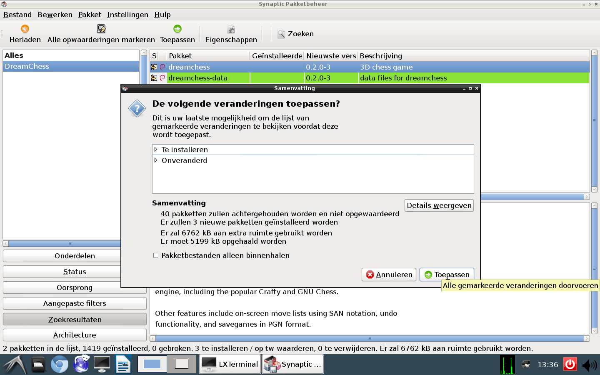
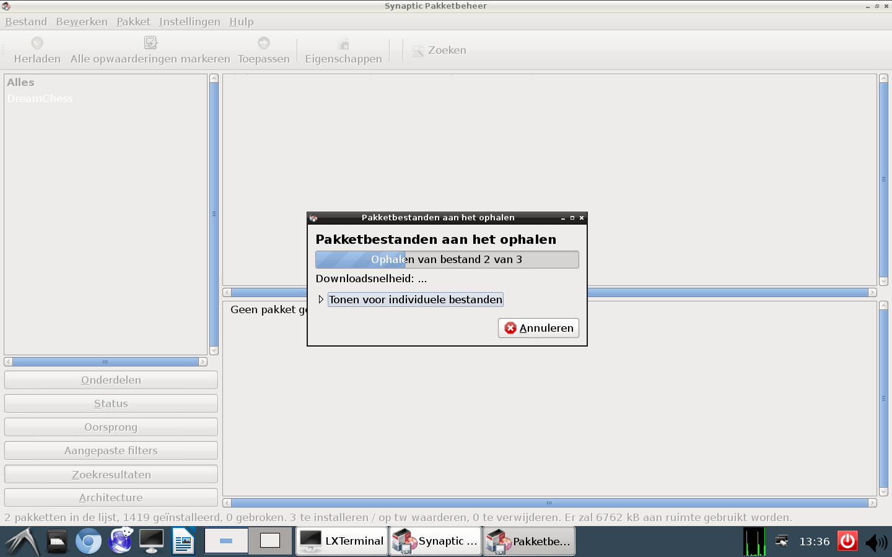
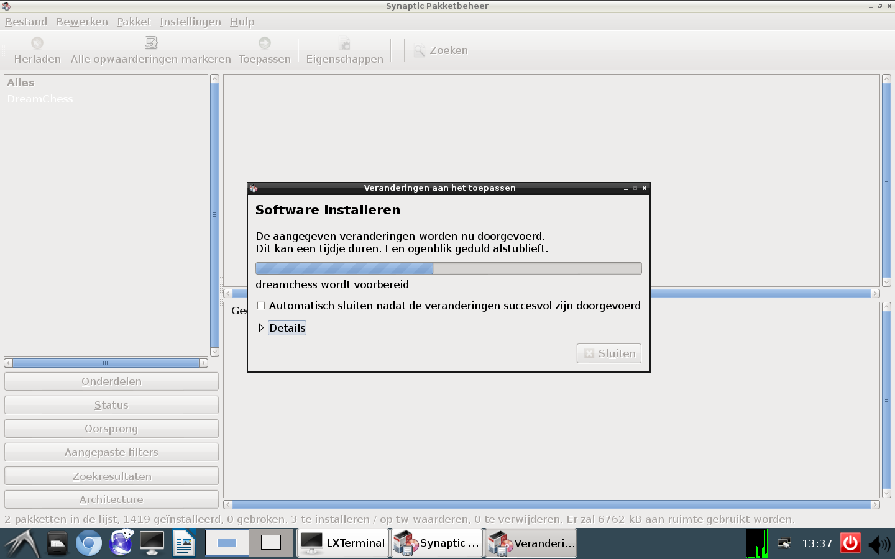
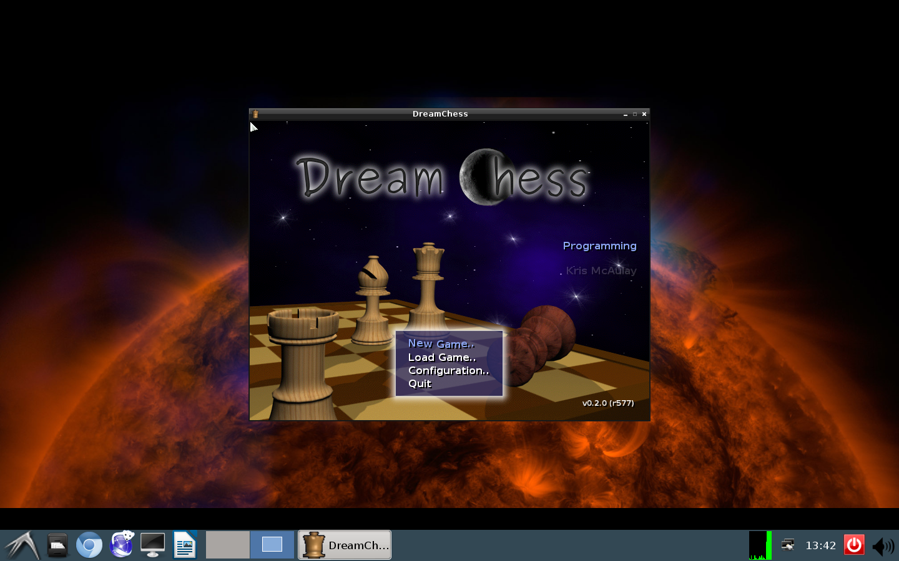

Je opent Synaptic. Dit programma vind je waarschijnlijk onder Overige.
Synaptic vraagt gelijk bij openen naar je wachtwoord. Het heeft dit nodig om software te kunnen installeren of te verwijderen.
Nu je er toch bent, is het een goed idee om te herladen. Daarna weet je zeker dat je van alle programma's de nieuwste beschikbare versie kunt krijgen.
 Als je weet welk programma je wilt installeren, hoef je niet moeilijk te doen en het in een menu op te zoeken. Je doet Zoeken en voert de naam in.
In dit voorbeeld installeren we het schaakspelletje DreamChess. Je vinkt DreamChess aan.
DreamChess vraagt je om nog een paar andere stukjes software aan te vinken. Het functioneert niet naar behoren zonder. Dus klik je Markeren.
Nu klik je Toepassen. Je wordt nog eens gevraagd of je zeker weet dat je dit wilt doen Je klikt nogmaals op Toepassen.
Synaptic gaat nu softwarepakketten ophalen. Daarna geet het deze installeren.
 Als het geslaagd is, kun je daarna Synaptic afsluiten.

In Debian blijkt Dream Chess ondergebracht te zijn onder de Spelletjes. We zijn klaar voor een potje schaak!
